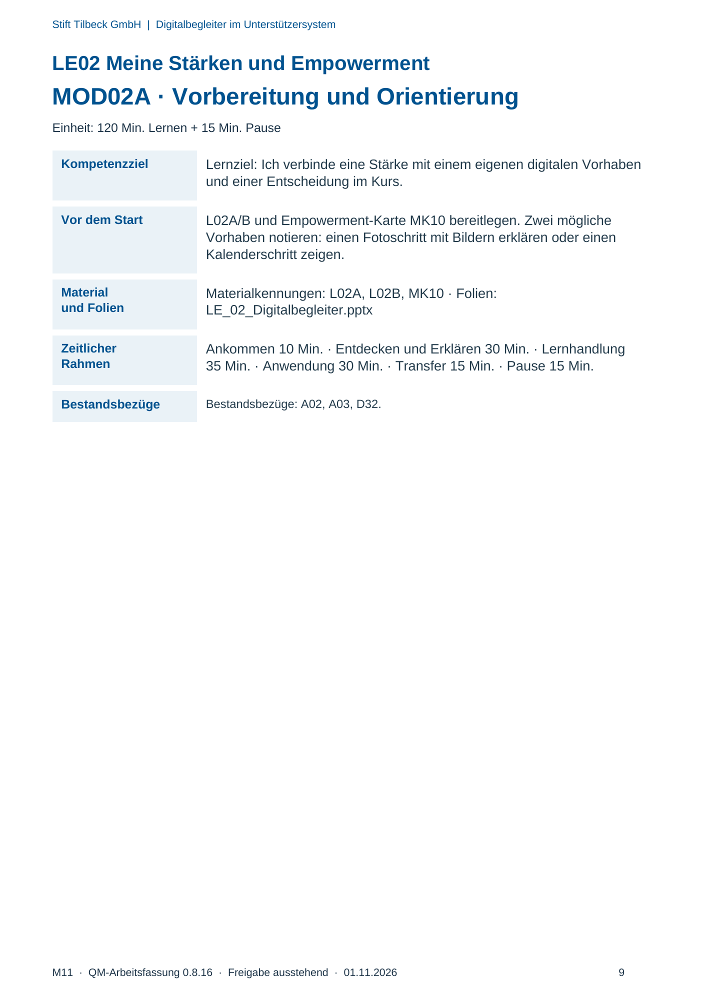
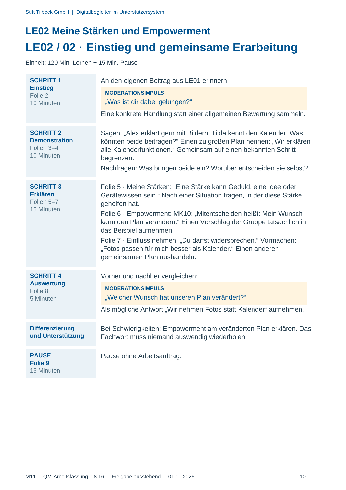
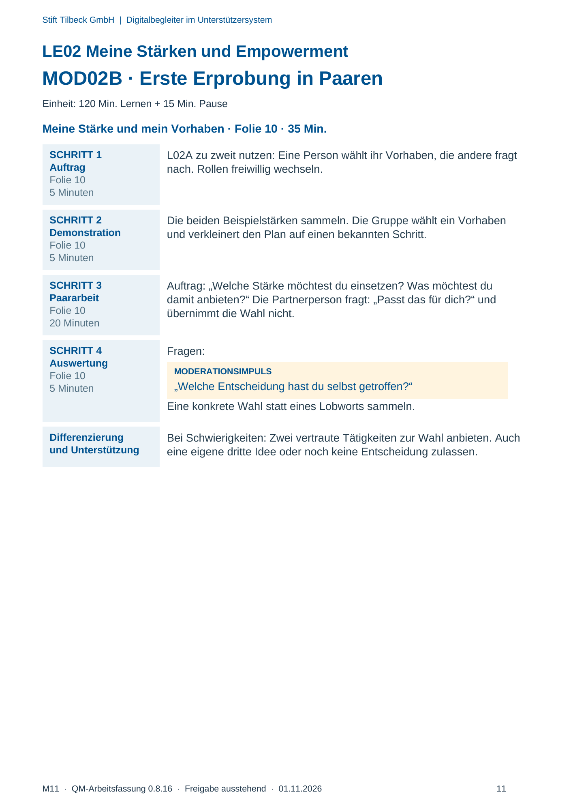
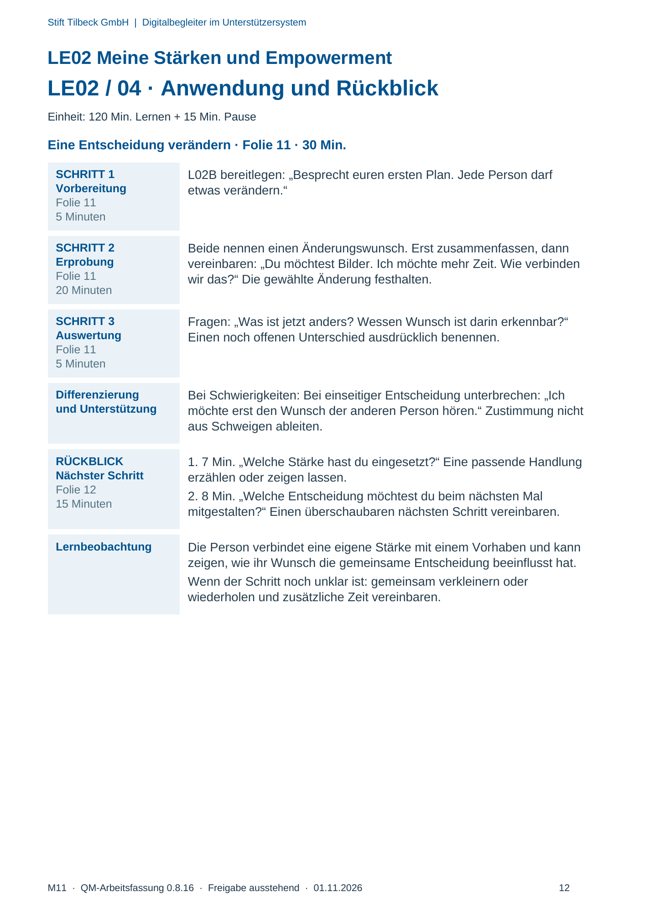

M11 · Originalseite 9, 10, 11, 12
Durchführungshilfe
Gezielte Original-Druckauswahl.
Fragen und Ankreuzfelder werden auf dem Ausdruck bearbeitet. Die Lesefassung speichert keine Antworten.
Lesefassung · Seite 9
Stift Tilbeck GmbH | Digitalbegleiter im Unterstützersystem
LE02 Meine Stärken und Empowerment
MOD02A · Vorbereitung und Orientierung
Einheit: 120 Min. Lernen + 15 Min. Pause
Kompetenzziel Lernziel: Ich verbinde eine Stärke mit einem eigenen digitalen Vorhaben
und einer Entscheidung im Kurs.
Vor dem Start L02A/B und Empowerment-Karte MK10 bereitlegen. Zwei mögliche
Vorhaben notieren: einen Fotoschritt mit Bildern erklären oder einen
Kalenderschritt zeigen.
Material
und Folien
Materialkennungen: L02A, L02B, MK10 · Folien:
LE_02_Digitalbegleiter.pptx
Zeitlicher
Rahmen
Ankommen 10 Min. · Entdecken und Erklären 30 Min. · Lernhandlung
35 Min. · Anwendung 30 Min. · Transfer 15 Min. · Pause 15 Min.
Bestandsbezüge Bestandsbezüge: A02, A03, D32.
Originalseite ansehen

Lesefassung · Seite 10
Stift Tilbeck GmbH | Digitalbegleiter im Unterstützersystem
LE02 Meine Stärken und Empowerment
LE02 / 02 · Einstieg und gemeinsame Erarbeitung
Einheit: 120 Min. Lernen + 15 Min. Pause
SCHRITT 1
Einstieg
Folie 2
10 Minuten
An den eigenen Beitrag aus LE01 erinnern:
MODERATIONSIMPULS
„Was ist dir dabei gelungen?“
Eine konkrete Handlung statt einer allgemeinen Bewertung sammeln.
SCHRITT 2
Demonstration
Folien 3–4
10 Minuten
Sagen: „Alex erklärt gern mit Bildern. Tilda kennt den Kalender. Was
könnten beide beitragen?“ Einen zu großen Plan nennen: „Wir erklären
alle Kalenderfunktionen.“ Gemeinsam auf einen bekannten Schritt
begrenzen.
Nachfragen: Was bringen beide ein? Worüber entscheiden sie selbst?
SCHRITT 3
Erklären
Folien 5–7
15 Minuten
Folie 5 · Meine Stärken: „Eine Stärke kann Geduld, eine Idee oder
Gerätewissen sein.“ Nach einer Situation fragen, in der diese Stärke
geholfen hat.
Folie 6 · Empowerment: MK10: „Mitentscheiden heißt: Mein Wunsch
kann den Plan verändern.“ Einen Vorschlag der Gruppe tatsächlich in
das Beispiel aufnehmen.
Folie 7 · Einfluss nehmen: „Du darfst widersprechen.“ Vormachen:
„Fotos passen für mich besser als Kalender.“ Einen anderen
gemeinsamen Plan aushandeln.
SCHRITT 4
Auswertung
Folie 8
5 Minuten
Vorher und nachher vergleichen:
MODERATIONSIMPULS
„Welcher Wunsch hat unseren Plan verändert?“
Als mögliche Antwort „Wir nehmen Fotos statt Kalender“ aufnehmen.
Differenzierung
und Unterstützung
Bei Schwierigkeiten: Empowerment am veränderten Plan erklären. Das
Fachwort muss niemand auswendig wiederholen.
PAUSE
Folie 9
15 Minuten
Pause ohne Arbeitsauftrag.
Originalseite ansehen

Lesefassung · Seite 11
Stift Tilbeck GmbH | Digitalbegleiter im Unterstützersystem
LE02 Meine Stärken und Empowerment
MOD02B · Erste Erprobung in Paaren
Einheit: 120 Min. Lernen + 15 Min. Pause
Meine Stärke und mein Vorhaben · Folie 10 · 35 Min.
SCHRITT 1
Auftrag
Folie 10
5 Minuten
L02A zu zweit nutzen: Eine Person wählt ihr Vorhaben, die andere fragt
nach. Rollen freiwillig wechseln.
SCHRITT 2
Demonstration
Folie 10
5 Minuten
Die beiden Beispielstärken sammeln. Die Gruppe wählt ein Vorhaben
und verkleinert den Plan auf einen bekannten Schritt.
SCHRITT 3
Paararbeit
Folie 10
20 Minuten
Auftrag: „Welche Stärke möchtest du einsetzen? Was möchtest du
damit anbieten?“ Die Partnerperson fragt: „Passt das für dich?“ und
übernimmt die Wahl nicht.
SCHRITT 4
Auswertung
Folie 10
5 Minuten
Fragen:
MODERATIONSIMPULS
„Welche Entscheidung hast du selbst getroffen?“
Eine konkrete Wahl statt eines Lobworts sammeln.
Differenzierung
und Unterstützung
Bei Schwierigkeiten: Zwei vertraute Tätigkeiten zur Wahl anbieten. Auch
eine eigene dritte Idee oder noch keine Entscheidung zulassen.
Originalseite ansehen

Lesefassung · Seite 12
Stift Tilbeck GmbH | Digitalbegleiter im Unterstützersystem
LE02 Meine Stärken und Empowerment
LE02 / 04 · Anwendung und Rückblick
Einheit: 120 Min. Lernen + 15 Min. Pause
Eine Entscheidung verändern · Folie 11 · 30 Min.
SCHRITT 1
Vorbereitung
Folie 11
5 Minuten
L02B bereitlegen: „Besprecht euren ersten Plan. Jede Person darf
etwas verändern.“
SCHRITT 2
Erprobung
Folie 11
20 Minuten
Beide nennen einen Änderungswunsch. Erst zusammenfassen, dann
vereinbaren: „Du möchtest Bilder. Ich möchte mehr Zeit. Wie verbinden
wir das?“ Die gewählte Änderung festhalten.
SCHRITT 3
Auswertung
Folie 11
5 Minuten
Fragen: „Was ist jetzt anders? Wessen Wunsch ist darin erkennbar?“
Einen noch offenen Unterschied ausdrücklich benennen.
Differenzierung
und Unterstützung
Bei Schwierigkeiten: Bei einseitiger Entscheidung unterbrechen: „Ich
möchte erst den Wunsch der anderen Person hören.“ Zustimmung nicht
aus Schweigen ableiten.
RÜCKBLICK
Nächster Schritt
Folie 12
15 Minuten
1. 7 Min. „Welche Stärke hast du eingesetzt?“ Eine passende Handlung
erzählen oder zeigen lassen.
2. 8 Min. „Welche Entscheidung möchtest du beim nächsten Mal
mitgestalten?“ Einen überschaubaren nächsten Schritt vereinbaren.
Lernbeobachtung Die Person verbindet eine eigene Stärke mit einem Vorhaben und kann
zeigen, wie ihr Wunsch die gemeinsame Entscheidung beeinflusst hat.
Wenn der Schritt noch unklar ist: gemeinsam verkleinern oder
wiederholen und zusätzliche Zeit vereinbaren.
Originalseite ansehen
